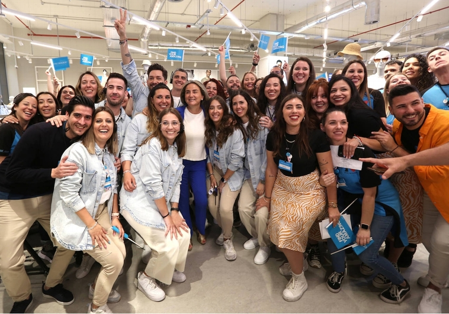

Primark abre su primera tienda en Toledo
Este establecimiento de moda 'low cost' ha invertido más de dos millones y ha creado cerca de un centenar de
puestos de trabajo
Primark cuenta con 2.500 metros cuadrados y 50.000 referencias a disposición de los
toledanos.
El centro comercial Luz del Tajo ha acogido este viernes la apertura de la primera tienda de Primark en
Toledo ante la expectación de cientos de toledanos congregados en las inmediaciones del establecimiento
desde
primera hora de la mañana.
La expectación prometía y no defraudó. La multinacional irlandesa Primark abrió sus
puertas en el centro comercial Luz del Tajo montando una gran fiesta. Los primeros clientes que, aguardaban
la cola desde primera hora a las puertas del establecimiento, fueron recibidos con música y al baile de sus
empleados.

Esta tienda, la segunda establecida en Castilla-La Mancha después de la de Albacete, generará empleos
directos en la
ciudad y servirá para dar servicio a la población de la parte noroeste de la Comunidad Autónoma, evitando
así el éxodo comercial a la zona sur de Madrid.
La nueva tienda se podrán encontrar en la siguiente dirección:
Avenida del Río Boladiez, s/n.
45007 Toledo.
Desde hace tiempo, Primark ha creado numerosos puestos de empleo allí donde ha abierto sus tiendas,
analicemos algunos casos:
Creación de puestos de empleo PRIMARK
Listado Años y Ciudades
|
AÑO 2018 |
AÑO 2019 |
AÑO 2020 |
AÑO 2021 |
AÑO 2022 |
MADRID |
98 |
100 |
120 |
180 |
220 |
| BILBAO |
85 |
105 |
100 |
115 |
| BARCELONA |
125 |
150 |
100 |
130 |
| VALENCIA |
95 |
120 |
130 |
190 |
130 |
| TOLEDO |
|
|
|
|
98 |
Si quieres saber más .... pincha aquí
Durante la inauguración, el director general de Primark para España y Portugal, Carlos Inácio, ha destacado que la apertura de esta nueva tienda en Toledo, en una ciudad "llena de historia y de encanto", supone la número 57 en España, la segunda en la región y la 421 a nivel mundial.
VOLVER AL ENCABEZADO